Probabilidad Condicional
Cuando los eventos no son independientes y ocurren en forma sucesiva la ocurrencia de uno de ellos puede influir en la del otro. Este tipo de probabilidad se llama probabilidad condicional.Por ejemplo hay tres cajas c1, c2 y c3 tales que la caja c1 contiene 2 esferas azules y 2 rojas, la caja c2 contiene 3 esferas azules y 1 roja y la caja c3 contiene 2 esferas azules y 3 rojas. Si se va a extraer una esfera de una caja, esta esfera puede ser azul o roja; no obstante la probabilidad de que sea de uno u otro color depende de cual de las cajas se extrae esa esfera. De hecho los eventos B elegir una de las cajas y A extraer una bola azul de la caja seleccionada no son independientes.
La probabilidad de que un evento A ocurra dado que un evento B
ha ocurrido se llamará probabilidad condicional de A dado B. Se
denotará por
P[A  B]. Esta probabilidad se puede calcular recurriendo a la regla:
B]. Esta probabilidad se puede calcular recurriendo a la regla:
Dos eventos A y B son independientes si se cumple:
Una manera informal de darle alguna justificación a esta regla es la
siguiente. Si en un espacio muestral conocemos de previo que ha ocurrido un
evento, B, y queremos calcular la probabilidad de que ocurra otro evento A
entonces, simplificando el cálculo de la probabilidad a la razón: total de
casos que verifican el evento entre el total de casos, se tiene que como ya ha
ocurrido B el espacio muestral ahora puede reducirse a B y los
casos que verifican el evento ya no son los elementos de A sino los
elementos de A  B es decir:
B es decir:
|
P[A |
(1.8) |
Si A y B son eventos no necesariamente independientes se tiene:
|
P[A |
(1.9) |
Esta regla se generaliza en el siguiente sentido. Si A1, A2,..., An son eventos entonces la probabilidad de la ocurrencia del evento compuesto A1 y A2 y ... y An, es decir todos los eventos, cumple :
|
P[A1 |
|
P[A1]P[A2 |
Ejemplo 4
Suponga que se lanzan un par de dados. Calcule la probabilidad de que ocurran cualquiera de los siguiente eventos. A : el primero de los dados cae impar, B : el segundo cae impar y C : la suma de ambas caras es impar.
Solución
No es difícil comprobar las siguientes probabilidades:
| P[A] = |
P[B] = |
|
| P[A |
P[B |
|
| P[C] = |
P[C |
|
| P[C |
P[A |
|
| P[A]P[B]P[C]
= |
Se tiene que los pares de eventos A, C y B, C son independientes, pero A, B y C no lo son.
Ejemplo 5
Un carpintero tiene tornillos en dos cajas una azul y otra roja. Él toma al azar tonillos de cualquiera de las dos cajas, pero la caja azul está un poco más cerca por lo que toma tornillos de ella dos de cada tres veces. La caja azul contiene cuatro tornillos de 15 mm y cinco de 20 mm y la caja roja contiene seis de 15 mm y dos de 20 mm.
- Si en las dos siguientes búsquedas de tornillo el carpintero toma un tornillo de cada caja cuál es la probabilidad de que ambos sean del mismo tipo.
- Si el carpintero necesita dos tornillos y los toma en forma sucesiva de alguna de la cajas cuál es la probabilidad de que los dos sean del mismo tipo
Solución
- Sea A el evento: toma un tornillo de 15 mm de cada caja y B
el evento: toma un tornillo de 20 mm de cada caja.
El evento A no es simple de hecho, es el evento compuesto A1
 A2 donde A1 es toma un tornillo de
15 mm de la caja 1 y A2 es toma un tornillo de 15 mm de la
caja 2, eventos independientes.
P[A] = P[A1
A2 donde A1 es toma un tornillo de
15 mm de la caja 1 y A2 es toma un tornillo de 15 mm de la
caja 2, eventos independientes.
P[A] = P[A1 A2] = P[A1]P[A2] = 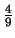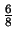
=
A2] = P[A1]P[A2] = 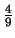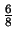
=  .
.
Similarmente.P[B] =
 = 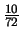
= 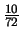
Como A y B son excluyentes la probabilidad pedida es:
P[A B] = P[A] + P[B] =
+
= 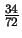.
B] = P[A] + P[B] =
+
= 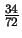.
- En este caso el evento pedido puede descomponerse como sigue. Sea M
el evento toma los tornillos de la caja azul y N toma los tornillos
de la caja roja. Sean P1 el primer tornillo es de 15 mm, P2
el segundo tornillo es de 15 mm, Q1 el primer tornillo es
de 20 mm y Q2 el segundo tornillo es de 20 mm. La
probabilidad buscada es: elegir de la caja azul y tomar 2 tornillos
iguales o elegir de la caja roja y tomar 2 tornillos iguales
P[{(P1
P2)
(Q1
Q2)}
M}
{(P1
P2)
(Q1
Q2)}
N}] = P[M]P[{(P1
P2)
Q1
Q2}  M] + P[N]P[{(P1
P2)
Q1
Q2}
N]
M] + P[N]P[{(P1
P2)
Q1
Q2}
N]= P[N]P[{(P1
P2)
Q1
Q2}
N]= 
 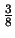
+ 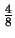
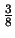
+ 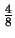 +
+  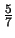
+ 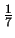
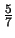
+ 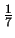 = 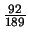.
= 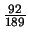.
Ejemplo 6
El siguiente ejemplo resulta interesante porque además de ser un problema en cierta forma clásico de las probabilidades nos muestra que eventualmente nuestra intuición en probabilidades debe ser mucho más cautelosa. Nos referiremos al mismo como el problema de los cumpleaños y aparece en buena parte de los libros de probabilidad.
Suponga que hay n estudiantes en un salón de clase, ninguno nacido en 29 de febrero, y que el año en el que estamos no es bisiesto.
Por el principio del palomar cualquiera sabe que si n > 365,
entonces al menos dos personas tienen la misma fecha de cumpleaños; en el
sentido que cumplen el mismo día del mismo mes. Supongamos que
2  n < 365, y demos respuesta a las preguntas siguientes:
n < 365, y demos respuesta a las preguntas siguientes:
- Cuál es la probabilidad, C, de que al menos dos personas tengan la misma fecha de cumpleaños.
- Cuál es el mínimo valor de n para que esta probabilidad sea mayor que 0.5.
Solución
Hay en total 365n posibilidades para que ocurran los cumpleaños de los n estudiantes. La probabilidad de que dos personas cumplan en la misma fecha es el complemento de que todos cumplan en días diferentes del año. Tomando 1 para el primero de enero y 365 para el 31 de diciembre se tiene que la probabilidad del evento E: ningún par de personas cumplan el mismo día es:
| P[E] | = | 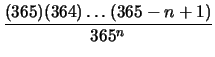 |
| = |
La probabilidad solicitada es
La segunda pregunta se responde resolviendo la desigualdad
por ejemplo se pueden tabular algunos valores y obtener la respuesta.
| n | P[C] |
| 15 | 0.253 |
| 25 | 0.568 |
| 30 | 0.706 |
| 40 | 0.891 |